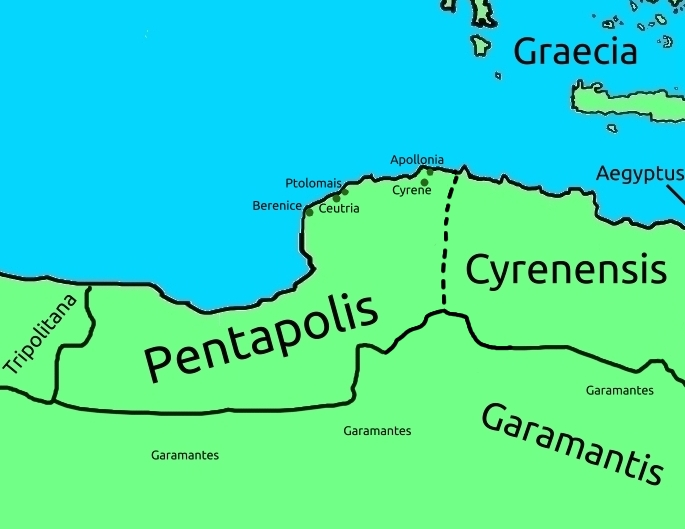

Pentapolis and Cyrenensis
Pentapolis is named as such after it's "penta-", five, major cities, "polis". These are, according to Isidore of Seville's description: Berenice, Ceutria, Apollonia, Ptolomais and Cyrene.
"According to Isidore of Seville" because the town of Ceutria, referenced by Isidore, cannot be found in almost any other places, rather there being the referenced the port town of Barca.
The name of this town became the Arabic name for Cyrenensis. "Barqah", or as it is called in English, Cyrenaica.
Berenice is modern Benghazi, both it and Ptolomais being named after kings of Egypt who built them.